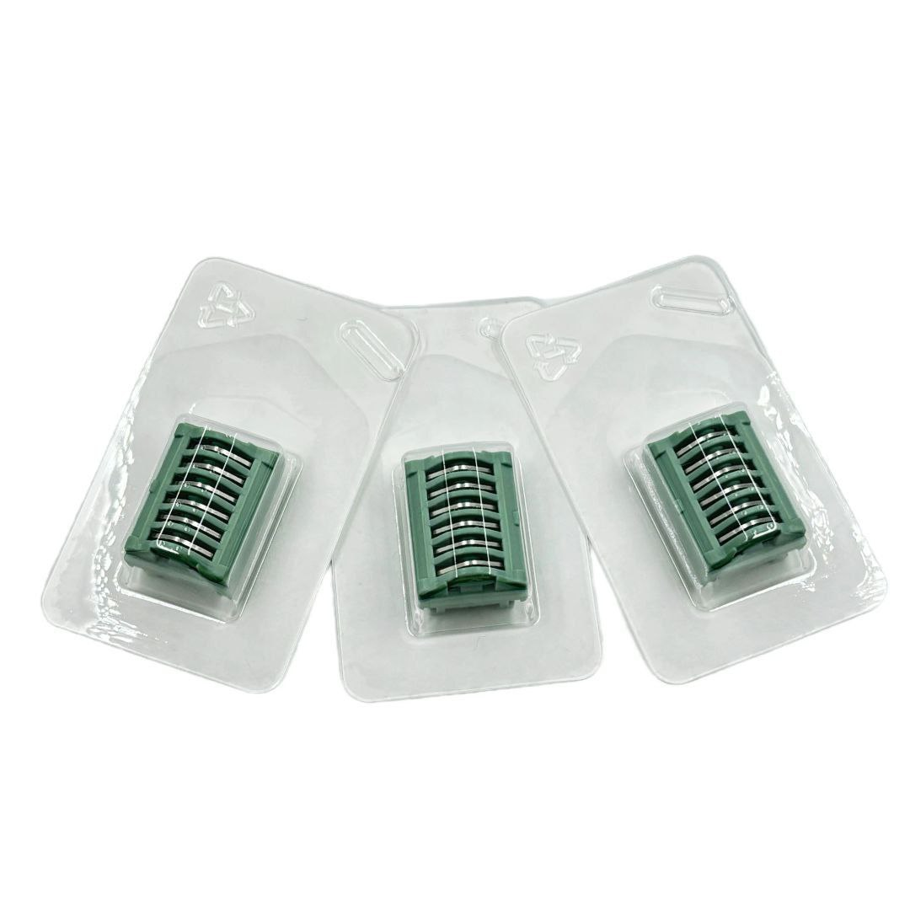

Kislorod maska
Yuqori sifatli va ishonchli kislorod maskasi, davolash va reanimatsiya jarayonlari uchun mo'ljallangan.
Rayol Med Texnika mahsulotlarini ko'ring va kerakli mahsulotni qidiruv orqali toping.
Sog'liqni saqlash muassasalari uchun ishonchli va sifatli mahsulotlar.
Yuqori sifatli va ishonchli kislorod maskasi, davolash va reanimatsiya jarayonlari uchun mo'ljallangan.

2 yo'lli lateks kateter - siydik pufagi uchun ishonchli va qulay yechim. Barqaror fiksatsiya, turli o'lchamlar va rangli belgilar bilan ishlatiladi.

Tibbiy muolajalar uchun steril, qulay va ishonchli bir martalik klipsalar.
Bu so'rov bo'yicha mahsulot topilmadi.